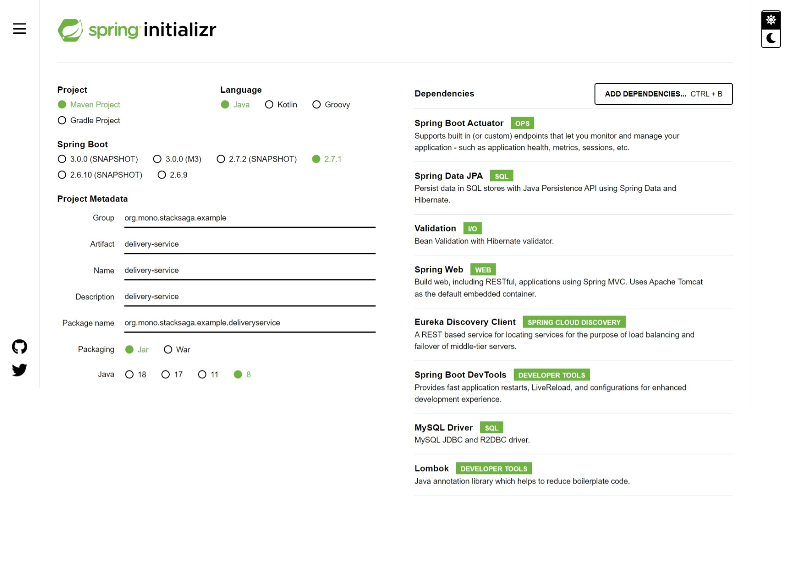

Overview Last updated: 2019-06-01
In the previous two articles, we have successfully created the eureka-server and the order-service. now we are going to create one of next microservices. the next service which we are going to implement is delivery-service. in the delivery-service we want to have two endpoints for execute the place-order according the use-case.
The following endpoints will be created in this part
-
PUT
/delivery-service/start
Full source code on Github
Creating delivery-service.
Visit to the spring initializer and create the project by adding the following dependencies.
Database
There are two tables in the delivery-service's db called ss_delivery_detail and
ss_delivery_status_log. (you don't want to creat the database manually. because,
spring-data-jpa will create the
database and the tables when start the project.)
Implementation of delivery-service
Configuration properties
same as the other services, we have to put some of our properties in the
application.yml
file.
application.yml
delivery-service > src/main/resources/application.ymlAnnotate the main class
for now, we have been using the only eureka client in this project. therefore, one and only
annotation for main class is @EnableEurekaClient.
Entity classes
DeliveryDetailEntity.java
delivery-service > org/mono/stacksaga/example/deliveryservice/entity/DeliveryDetailEntity.javaDeliveryStatusLogEntity.java
delivery-service > org/mono/stacksaga/example/deliveryservice/entity/DeliveryStatusLogEntity.javaRepository classes of delivery-service
DeliveryStatusRepository.class
delivery-service > org/mono/stacksaga/example/deliveryservice/repository/DeliveryStatusRepository.javaDeliveryStatusLogRepository.class
delivery-service > org/mono/stacksaga/example/deliveryservice/repository/DeliveryStatusLogRepository.javaService classes of delivery-service
DeliveryDetailService.class
delivery-service > org/mono/stacksaga/example/deliveryservice/service/DeliveryDetailService.javaController classes of delivery-service
now we are going to create the endpoints for put the delivery details after placing the order successfully.
before creating the service class, we have to create the response body and request body DTOs
StartDeliveryRequestBody.class
delivery-service > org/mono/stacksaga/example/deliveryservice/dto/StartDeliveryRequestBody.javaStartDeliveryResponseBody.class
delivery-service > org/mono/stacksaga/example/deliveryservice/dto/StartDeliveryResponseBody.javaNow we are going to create our DeliveryController by using the response body adn request body classes that we created above.
DeliveryController.class
delivery-service > org/mono/stacksaga/example/deliveryservice/controller/DeliveryController.java
Using the Curl.
After all, The delivery-server project folder and file structure like below.
└───main
├───java
│ └───org
│ └───mono
│ └───stacksaga
│ └───example
│ └───deliveryservice
│ │ DeliveryServiceApplication.java
│ │
│ ├───controller
│ │ DeliveryController.java
│ │
│ ├───dto
│ │ StartDeliveryRequestBody.java
│ │ StartDeliveryResponseBody.java
│ │
│ ├───entity
│ │ DeliveryDetailEntity.java
│ │ DeliveryStatusLogEntity.java
│ │
│ ├───repository
│ │ DeliveryStatusLogRepository.java
│ │ DeliveryStatusRepository.java
│ │
│ └───service
│ DeliveryDetailService.java
│
└───resources
│ application.yml
│
├───static
└───templates
Example series
-
Microservice example without using StackSAGA (Imperative way)
-
Microservice example by using StackSAGA (Imperative way).